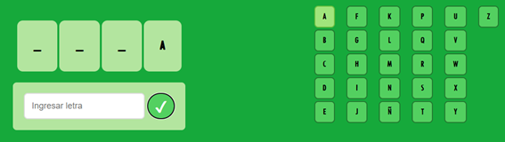

Hanguesser

Como Jugar?
El juego del ahorcado es un clásico pasatiempo donde el objetivo es adivinar una palabra secreta, letra por letra,
antes de que se complete el dibujo del personaje colgado.
En esta versión digital, la palabra es propuesta por la página y se representa mediante una fila de casillas vacías,
cada una indicando una letra oculta.
El jugador debe ingresar una letra en el campo inferior, y luego presionar el botón de confirmación.
Si la letra está en la palabra, se revelará en su posición correspondiente y también se iluminará en verde
dentro del abecedario ubicado a la derecha.
Por ejemplo, en la imagen, la letra "A" fue un acierto y se muestra en la primera casilla.

Si la letra no pertenece a la palabra, como ocurrió con la "S", se marcará en rojo y se agregará una parte
al dibujo del ahorcado, comenzando por la cabeza. La partida continúa con intentos sucesivos.
El jugador gana si logra descubrir la palabra completa antes de que el dibujo se termine.

Por el contrario, si se alcanzan todos los errores posibles y el dibujo del ahorcado se completa, el jugador pierde.
Este sistema visual, con pistas claras y retroalimentación en tiempo real, hace que el juego sea intuitivo y
entretenido para todas las edades.